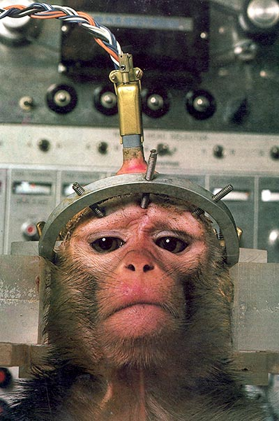
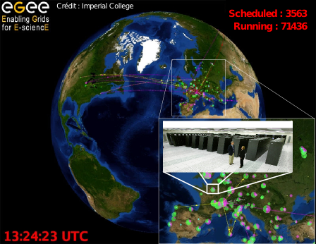
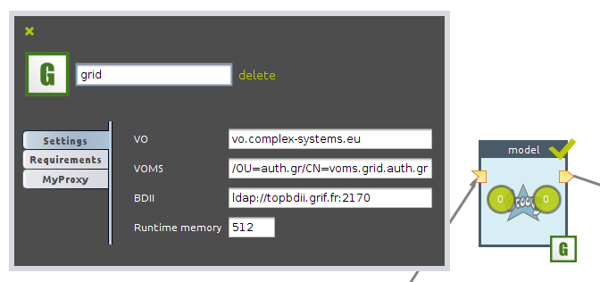

Experimenting on complex-system models in the cloud
Mathieu Leclaire
Institut des Systémes Complexes, Paris Île de France

Large scale experimentations on models
Methods
Design of experiments on a space of parameters. |
 |
Calibration. |
|
Methods
Genetic algorithms. |
|
 |
Sensitivity analysis. |
Naturally parallel algorithms => leverage parallelism.

What does OpenMOLE do ?
It implements exploration algorithms. |
 |
It transparently delegates computational loads to massively parallel environments. |
 |
Upscaling

Prototype small
Experiment large


A naturally parallel formalism to design experiments.

Embed your model as a black box
C
R
C++
Java
Scala
Scilab
Octave
Python
Netlogo
...

Assign execution environments to tasks.

Run and control the workflow execution.
Download: http://www.openmole.org

Chromosome structuring |
 |
 |
C++
2 days per simulation
1600 simulations
8.5 years / CPU |
Junier et al., CTCF-mediated transcriptional regulation through cell type-specific chromosome organization in the β-globin locus, Nucleic Acids Research, 2012.
SimTRAP project |
 |
 |
NetLogo
5 minutes per simulation
100000 simulations
1 year / CPU |
PhD thesis of J. Figuel, Modélisation et simulation des comportements piétonniers dans les espaces de transport – Application aux échanges quai / train de voyageurs.
Simpop project |
 |
|
Scala
5 minutes per simulation
360 000 000 simulations
22 years / CPU |
Reuillon et al., Algorithmes évolutionnaires sur grille de calcul pour le calibrage de modéles géographiques, proceedings of France Grilles 2012.